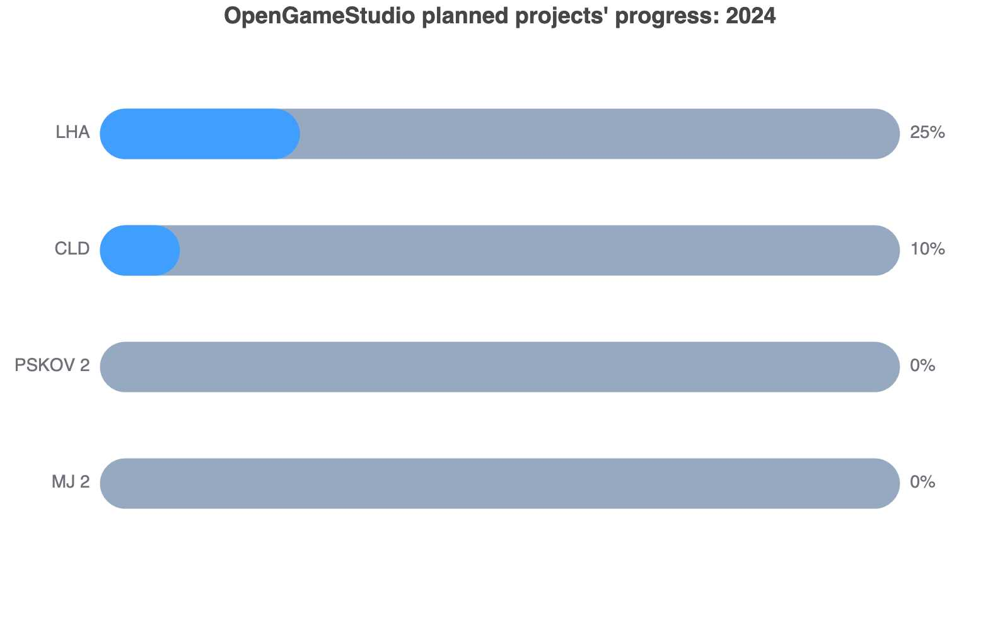

News
PSKOV 2 editor and components
2025-06-10 00:00
PSKOV 2 editor draft
In May I created PSKOV 2 editor draft which is only capable of:
- display two left menu items
- display contents in the right for the selected menu item
You probably can't see anything substantial in this, however, the mentioned functionality is run by a component. In this case it's called WelcomeComponent. Both Git and Markdown functionality is expected to follow the same pattern of. . .
Notes and Git
2025-05-10 00:00
Notes
In April I created a web application to take notes.
Initially, the features I wanted to implement were:
- keep data in Git
- web application uses DoX architecture
- data is synchronized among several clients: PC, mobile, etc.
I have managed to fulfill the first two items only, didn't have time for the third one. Thus, the application is pretty much useless at the moment.. . .
PSKOV 2 without LHA?
2025-04-10 00:00

Assessing the feasibility of PSKOV 2 without Local Host Access
PSKOV 2 and original PSKOV assume there is Local Host Access running in order to access PC's local filesystem to read Markdown files and write HTML ones.
In March I assessed if Isomorphic-Git is able to read and write to Git repositories from a web browser. The assessment succeeded. Actually, this was the second assessment of Isomorphic-Git. The first one happened in 2021, however, it ended as a failure because Isomorphic-Git cannot work without CORS. . .
CLD: Context generation
2025-03-11 00:00

Context generation
In February I've updated the Cross-language dialect (CLD) translator to generate Context out of YML. The generated Contexts have already been used for the following projects:
- CLD (the CLD translator generated its own Context)
- LHA
- PSKOV
I never really took time to explain what Context is, so here's a very short explanation: Context is very close to Store in Redux. I'm afraid this is not yet the time to explain Context in detail because I don't yet have a good. . .
PSKOV 2 for JVM
2025-02-11 00:00

Seperate pages' generation
In January I implemented half of the functionality of original PSKOV: generation of separate HTML pages from Markdown.
Both PSKOV 1 and PSKOV 2 produce HTML files that look the same in web browsers. However, the contents of the generated HTML files differ because PSKOV 1 uses Showdown to convert Markdown to HTML, whereas PSKOV 2 uses intellij-markdown.
Let's see how the generated HTML files compare. Suppose we have the following. . .
Results of the year 2024
2025-01-15 00:00

Results
Let's see the results of the year 2024 quarter by quarter:
- The first quarter (January - March):
- (Swift) Implemented data bus for iOS to create common space of communication for fragmented code
- Introduced "Limited language model" term to describe portable code rules
- Python was selected as the anchor programming language from which to generate functional copies in other languages
- The second quarter (April - June):
- (Python) Created the first version of Python -> C++ translator. . .
The first Local Host Access working version
2024-12-09 00:00

Local Host Access
Tiny web server called Local Host Access (LHA) is ready to replace Local File System Access (LFSA) on JVM and macOS: I've generated this very article with LHA on macOS. Thus, Kotlin prooved to be a good choice for cross-platform development with a minor limitation.
The minor limitation is the fact that 99% of Kotlin is used on JVM. The remaining 1% is so-called Kotlin Native for iOS, Linux, macOS, and Windows. Thus, when one needs something as simple as to find out if a symlink. . .
Back to the development of "PSKOV"
2024-11-14 00:00

"PSKOV" today
Now, we have an old "PSKOV" version and we need an improved one.
First, we should recall what "PSKOV" consists of:
- The generator itself in the form of HTML page with JavaScript
- Helper Python script to save generated files to disk
Helper script is used to bypass web page restriction to access local file system.
The script itself is a tiny web server with the following commands:
| № | Command | Details |
|---|---|---|
| 1 | GET /path |
Get current working directory path |
Sound support and the search for a new direction
2024-10-11 00:00
Sound support
In September I implemented sound support. However, this was the last work for "Tail and Shadow" project, because the project's story writer - Eugene - left.
The search for a new direction
In September I also noticed the loss of interest in the project by the audience. I linked this to the fact that the project's functional and graphical results did not match that of the audience.. . .
Page 1 of 9